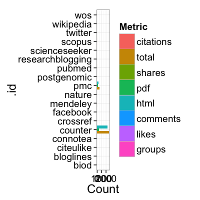
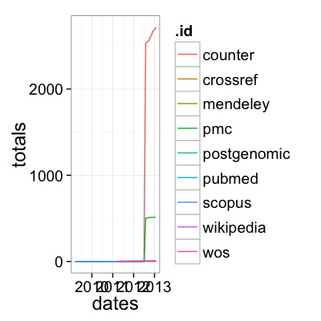
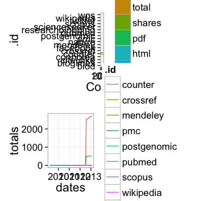

almplot(dat, type = NULL, removezero = TRUE)
alm (character)A ggplot2 bar plot for `totalmetrics` or line plot for `history`.
Plot results of a call to the alm function.
You have to specify info='detail' in your call to
alm so that you get history and summary data so
that either or both can be plotted in this function.
out <- alm(doi='10.1371/journal.pone.0001543', info='detail') almplot(out, type='totalmetrics') # just totalmetrics data


alm which is required to use this function.